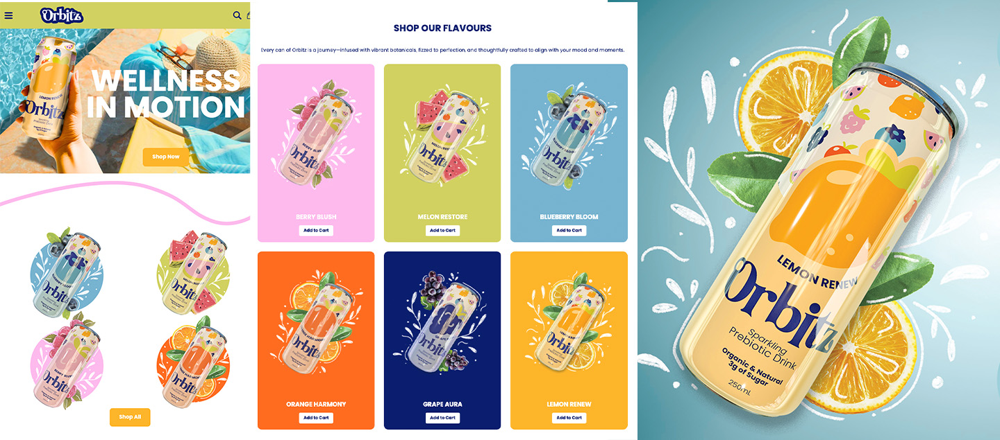
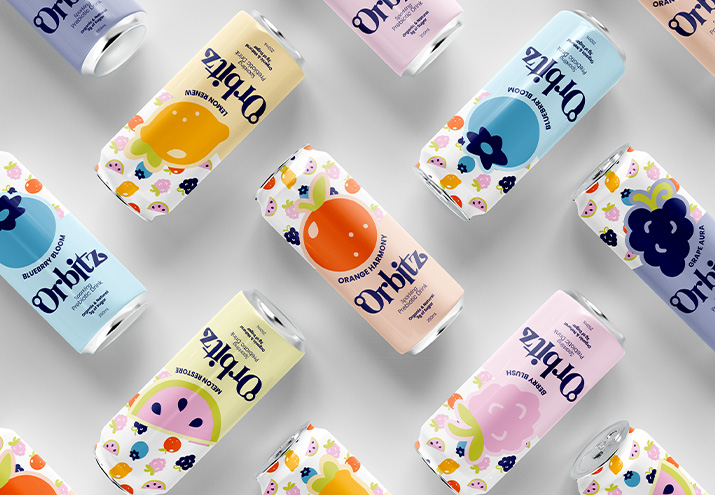
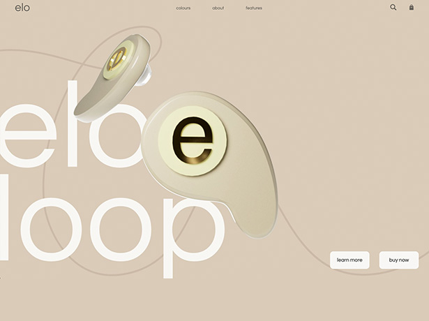
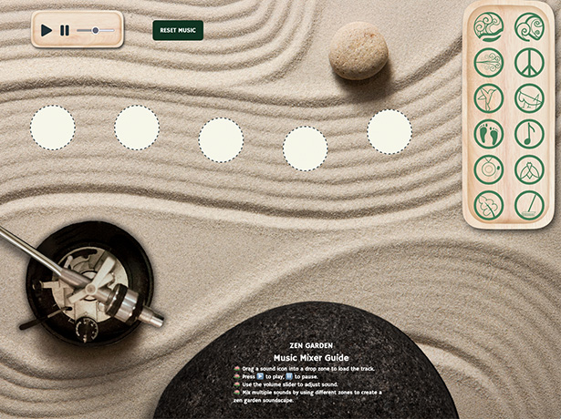
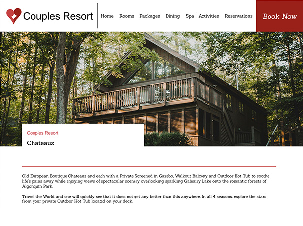

Orbitz is a conceptual prebiotic beverage brand crafted for women seeking a fun, functional, and health-forward drink. The goal of this project was to design a brand that blends science-backed wellness with playful, poetic energy. Through visual identity, packaging, product rendering, and a responsive website, Orbitz brings a modern, whimsical approach to gut health and daily vitality.

Brand Designer, Product Designer, Web Designer, Front End Developer
May – August 2025
Independent Project
The challenge was to develop a fully original beverage brand that could stand out in the increasingly crowded functional wellness market. Many prebiotic drinks lean heavily scientific or overly minimalist, creating a gap for a brand that feels both credible and emotionally engaging. The project required balancing evidence-based messaging with a light, playful personality targeted toward modern women who value wellness but don’t want to be overwhelmed by clinical jargon. In addition to creating a unique visual identity, the challenge involved designing packaging that communicates flavour, health benefits, and approachability at a quick glance. The digital experience also needed to reflect this balance — informative without feeling dense, stylish without sacrificing clarity, and aligned across brand, product, and web assets.
I built Orbitz around a theme of cosmic balance and circular motion, inspired by the idea of inner rhythm and orbiting wellness. The brand uses soft gradients, orbit-shaped motifs, and a bright, feminine palette to evoke energy and flow. Packaging was designed to feel modern and expressive, with floating elements and bubbly textures that nod to carbonation and botanicals. The responsive website continues this visual language through smooth animations, floating UI elements, and an airy layout structure. Each section highlights the product's ingredients, benefits, and flavour profiles while maintaining the brand’s poetic, whimsical tone.
I began by researching the original Orbitz brand and evaluating why it felt outdated. I studied its visual identity, colour palette, packaging, and overall tone to identify opportunities for improvement. I also analyzed current wellness and beverage trends to understand how modern brands communicate function, flavour, and lifestyle.
Using insights from the research phase, I reimagined the brand from the ground up. I developed a new logo that captures Orbitz’s themes of motion, balance, and femininity. In Adobe Illustrator and Photoshop, I created a refreshed visual style using a soft, energetic colour palette, playful gradients, circular motifs, and expressive typography. This new identity established a cohesive look and feel for both packaging and digital assets.
To visualize the product in a realistic context, I designed a full can label using Illustrator and applied it to a custom 3D model. The 3D render showcases the can’s reflective surface, carbonation-inspired textures, and vibrant flavours, helping bring the brand to life through photorealistic product imagery.
I mapped out the structure of the responsive website by creating low-fidelity wireframes that define navigation, content hierarchy, and user flow. These wireframes ensured clarity in how customers would explore flavours, ingredients, benefits, and brand storytelling.
After establishing the structure, I expanded the website into a fully designed interface. The UI incorporates Orbitz’s brand elements—floating shapes, soft gradients, and lively typography—while maintaining a clean, modern layout optimized for accessibility across mobile, tablet, and desktop.
To support the brand launch, I designed posters, social graphics, and promotional visuals using Illustrator and Photoshop. I also created motion graphics and short animations that highlight product features, flavour profiles, and the brand’s whimsical personality. These assets were integrated into the website to create an engaging and dynamic user experience.
All visual and motion assets were assembled into a responsive website that showcases the Orbitz brand, product renders, and promotional content. The final digital experience reflects the full evolution of the project—from research and rebrand to product visualization, storytelling, and interactive design.


